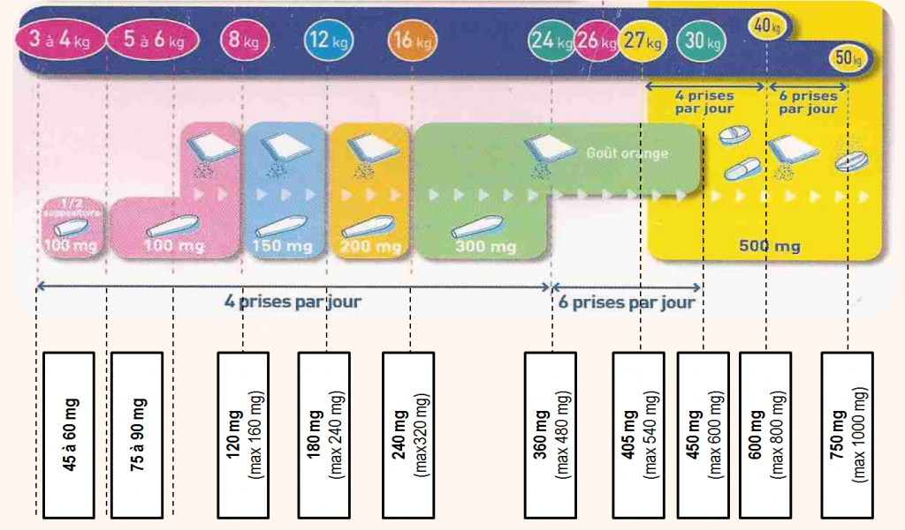

Dispensation en Pédiatrie
Table of Contents
- 1. Dispensation En Pédiatrie
- 2. Voies d'Administration
- 3. Posologies
- 4. Erreurs d'Administration
- 5. Effets Indésirables
- 6. Formes Pharmaceutiques: Mésusage
1. Dispensation En Pédiatrie
1.1. Classes d'âge
| Mois/Année | 0-1m | 1m-2a | 2-12a | 12-15a |
| Classe | NN1 | Nourisson | Enfant | Ado |
1.2. Demographie

Figure 1: La classe 0-16 ans représente 20% de la population européenne.
1.3. Place du Médicament en Pédiatrie
1.3.1. Rôle de l'ANSM/HAS
- PIPs 2
- Avis scientifiques
- AMM
- Accès précoce
- Accès compassionnel
- Préparations hospitalières pédiatriques
1.3.2. Règlements Pédiatriques Européens
- Facilitent le développement et l'accès des médicaments pour la population pédiatrique.
- Assurer un haut degré de qualité quand à la recherche, l'évaluation, et l'AMM des médicaments à usage pédiatrique.
- Améliorer la mise à disposition d'informations sur l'utilisation des médicaments chez les enfants
- Eviter de soumettre la population pédiatrique à des essais cliniques inutiles.
1.4. Particularités pharmacocinétiques
1.4.1. Absorption
- per os
NN Nourrissons Enfants Temps de vidange gastrique Retardé Augmenté Légèrement augmenté pH gastrique 5 4-2 3 Motilité intestinale Retardée Augmentée Légèrement augmentée Fonction biliaire Immature Normale Normale Enzymes intestinales: CYP1A1, CYP 3A PgP Immature Immature Normale Les acides faibles ont une biodisponibilité réduite: Phénobarbital, Phénitoïne
Les molécules instables en milieu acide, et molécules basiques ont une biodisponibilité augmentée: Benzylpénicilline, Erythromycine
- cutanée
- Couche cornée mince, peu kératinisée
- Vascularisation et hydratation abondante
- Large surface cutanée
→ Résorption cutanée importante: Iode, Vitamine A, Lidocaïne.
Il faudra faire attention au risque de toxicité
1.4.2. Distribution
Pour les médicaments hydrophiles:
- On aura un Vd 3 augmenté, donc une concentration inférieure par rapport à un adulte.
La dose de charge sera donc relativement plus importante.
| NN | 1 ans | 4 ans | Puberté | Adulte | |
|---|---|---|---|---|---|
| Eautotale | 75% | 60% | 60% | ||
| Eauextracell | 45% | 25% | 15%-20% | 20% | |
| Eaucell | 33% | 35% | 40% | 40% | |
| Graisses | 15% | 25% | 10% | 18% | 16%-18% |
1.4.3. Métabolisme
| Nouveau-né | Enfant | |
|---|---|---|
| CYP | Diminuée | Augmentée |
| Clairance | Diminuée | Augmentée |
| Résorption | Diminuée | Augmentée |
| Elimination | Diminuée | Augmentée |
| Métabolisme | Hypométaboliseur | Hypermétaboliseur |
| Conseils | Espacer les doses | Augmenter les doses |
| Rapprocher les doses | Diminuer les doses |
1.4.4. Elimination
L'élimination tend vers les valeurs adultes à 1 ans.
- Pour les nourrissons de moins d'un ans:
- Augmentation de la demi-vie
- Diminution de la clairance rénale
- Toxicité accrue
- Aminosides
- Pénicillines
- Céphalosporines
- Médicaments altérant le DFG6
- AINS
- Indométacine
- Ibuprofène
- Médicaments altérant la maturation rénale
- Corticostéroïdes
1.5. Spécificités Néphrologiques
- Clairance:
- Le calcul du DFG se fait par la formule de Schwarz 7
Diurèse:
Naissance 2 ans 8 ans Volume 30-60 mL 1 L Valeurs Adultes
1.6. Spécificités hématologiques
| Erythrocytes | Leucocytes | Thrombocytes | |
| NN | 18 g/dL | 18 G/L | Adulte |
| 1-3 mois | 10.5 - 13.5 g/dL | Adulte |
2. Voies d'Administration
- IM
- Douloureuse
- IV
- Toxicité
- Difficile
- Iatrogéne
- Peu adaptée
- Rectale
- Résorption aléatoire
- Orale
- Comprimés et gélules à partir de 7 ans
- Solutions/suspensions buvables de préférence

3. Posologies
- Posologie de l'enfant: \[ P_{enfant} = \frac{ S_{corporelle} \times D_{adulte} }{1.75} \]
- Modifier selon les résultats biologiques:
- Fonctions rénales
- Ionogramme sanguin
- Par rapport aux indications:
4. Erreurs d'Administration
- IV: 48% Facteur 10-100
- Formes buvables: Confusion mg/mL et mg/kg
- Forme galénique non adaptée
- Application cutanée: passage systémique
5. Effets Indésirables
5.1. Croissance
- Fluoroquinolones: contre-indiquées si < 8 ans sauf mucoviscidose
- Corticoïdes: ralentissement de la croissance
- Tétracyclines: dischromie et hypoplasie dentaire
5.2. Reye Syndrome
- Associé à l'Aspirine si < 16 ans
- Description: Atteinte cérébrale non-inflammatoire et hépatique
5.3. Précautions et Contre-indications
- Acide benzoïque CI < 2 ans: Risque d'ictère car fortement lié aux PP8
- Camphre: CI < 30 mois Risque de convulsions
- Acide borique et borate de Sodium (Talc, Cold Crean): CI < 3 ans Risque de convulsions
6. Formes Pharmaceutiques: Mésusage

6.1. Formes Orales Liquides
- Flacon multidose
- Utilisation de présentation adulte
- Instrument de mesure non adapté
- Conservation
- Absence de date d'ouverture
- Prescription en unité différente de l'unité indiquée
6.2. Formes Sèches
- Prescription de demi ou quart de comprimé
- Forme galénique inadaptée à l'âge
- Déconditionnement de médicament
- Ouverture des gélules
- Dispersion dans nourriture semi-solide
- Dissolution dans un liquide
- Broyage des comprimés
- Fractionnement